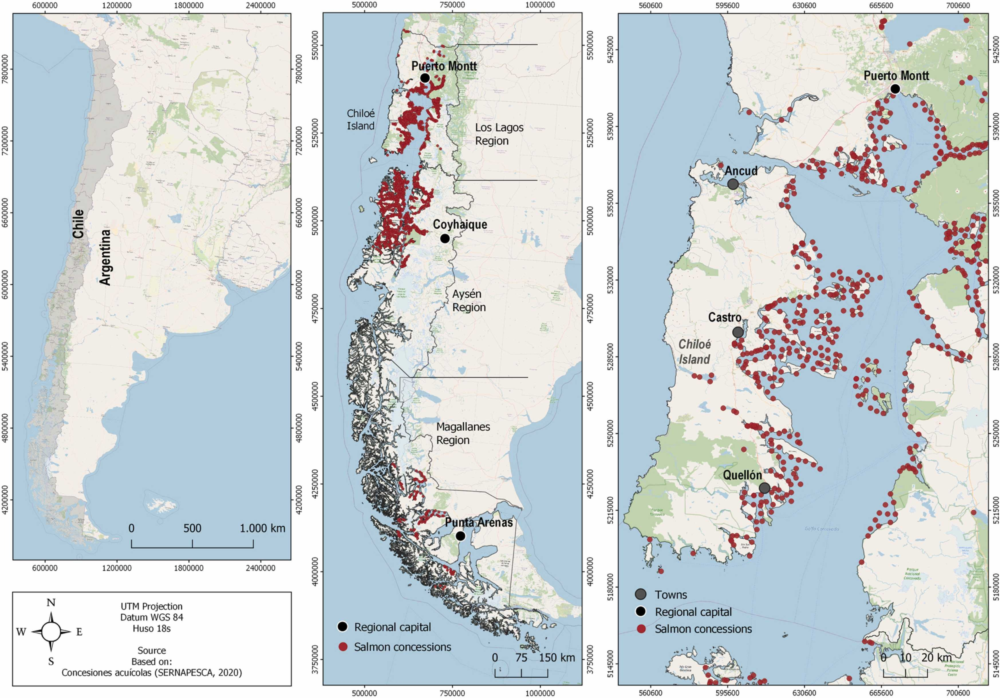
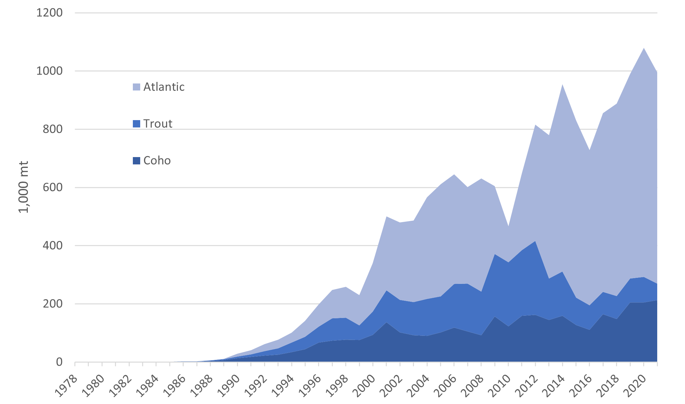
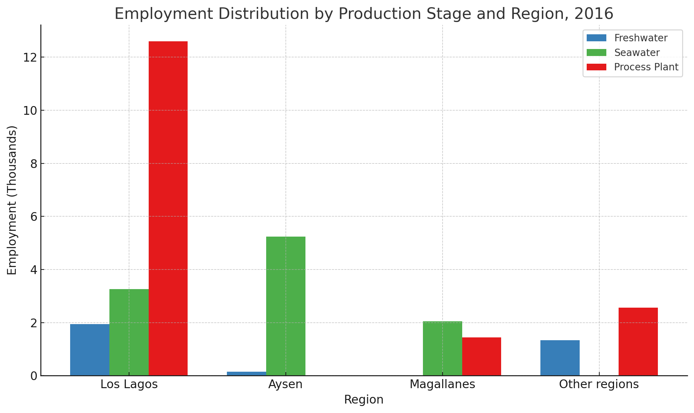
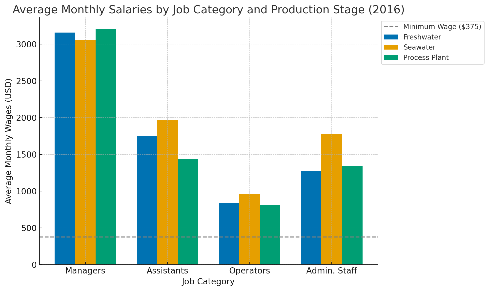
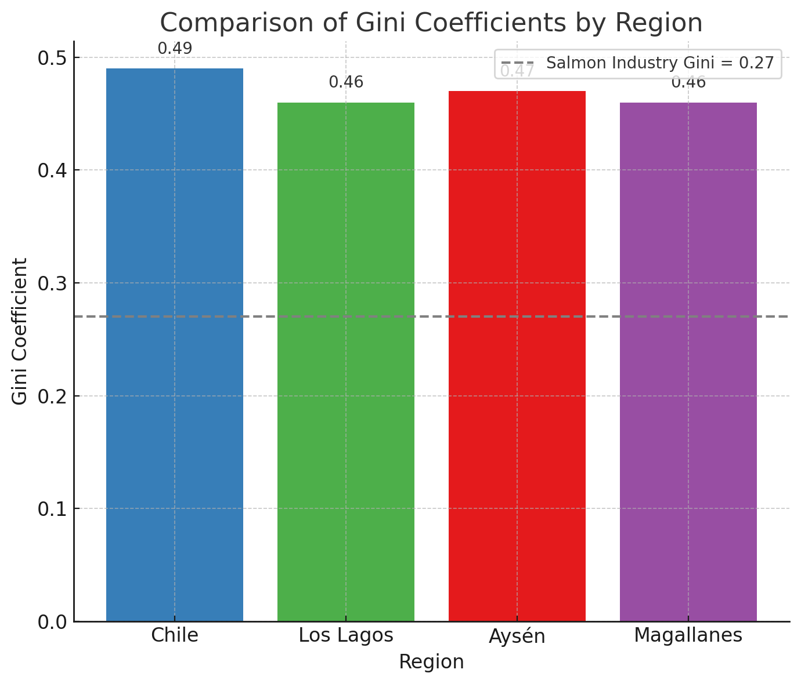
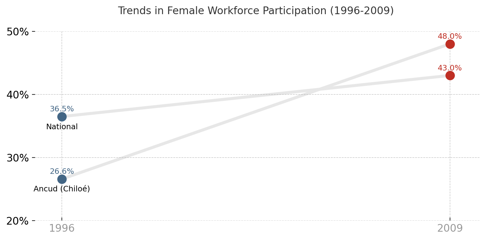
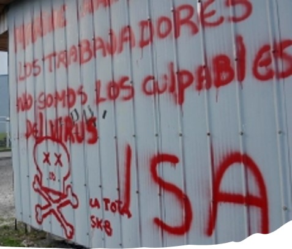
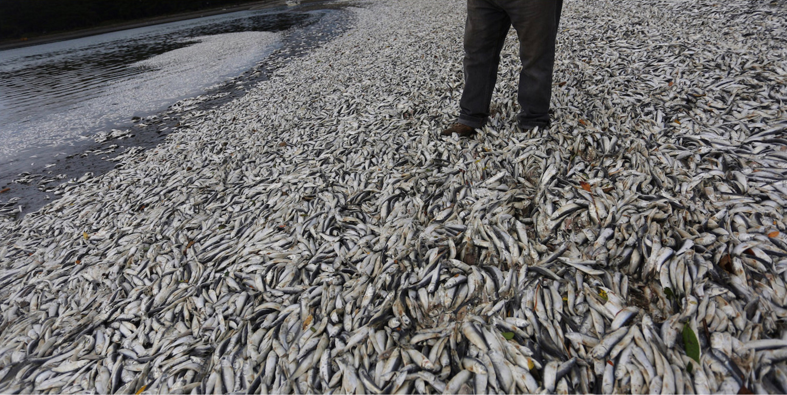

![]()
Abstract
Global aquaculture production has been rapidly increasing in recent decades. Associated with this growth, there has been a discussion with respect to the industry’s socioeconomic impact. In particular, the industry’s ability to make a positive difference in the communities where it is conducted is often questioned. This is a difficult topic to address due to limited data availability. However, it is a critical question concerning the aquaculture industry’s long-term viability. Some recent studies have addressed specific indicators such as poverty reduction in a given country. However, no studies review the impact of an aquaculture industry on a broad set of indicators over time. In this paper, we review the impact of the Chilean salmon industry on three broad socioeconomic indicators: employment, salary level and migration; as well as several narrower indicators. While data beyond production initially are scarce and mostly found in the gray literature, the information they provide connects well with newer data sets as they become available. Not unexpectedly, employment in the Chilean aquaculture industry increases with production. The industry pays relatively well, and it has a societal impact as opportunities created by the industry first reverse outward migration and then lead to inward migration. This is also associated with reduced poverty, a more even income distribution, a higher female labor participation ratio, and higher education levels. While the overall socioeconomic impacts of the industry are positive, they are also disrupted by severe environmental crises and show that the socioeconomic benefits are conditioned on environmental sustainability.
Presentation slides and short abstract video
The findings and analysis presented here were part of my dissertation defense. You can download the slides for this presentation below:
Summary and additional insights
In the following, you will find a summarized version of the paper, including some figures that were not part of the final published version but help illustrate key points. You can find all the corresponding figures references in the slides or in the final version of the paper.
Global aquaculture context
- Aquaculture is one of the fastest-growing food production sectors globally, driven by the rising demand for sustainable protein sources.
- Over the past decades, aquaculture has expanded rapidly, particularly in developing countries, which now account for over 90% of production [Garlock et al., 2020; Naylor et al., 2021].
- With its lower environmental footprint compared to other protein sources, aquaculture offers advantages for food security and resource efficiency [Gephart et al., 2021].
Chilean context
- Chile is the world’s second-largest producer of farmed salmon, supplying around 25% of global production.
- The industry began in the 1970s through public-private partnerships.
- Despite environmental and economic challenges, the salmon industry remains a critical economic driver for Chile [FAO, 2023].

Research focus
Objective: To provide a comprehensive review of the socio-economic impacts of the salmon industry in Chile.
Key indicators: - Employment trends and wage levels - Migration patterns - Broader social impacts, such as poverty reduction, income distribution, and female labor participation
Chilean salmon production

Socioeconomic impacts
Employment
- Regional Distribution (2016): The Los Lagos region leads in direct employment.
- Employment Growth: Significant upward trends in direct employment.
- Environmental Crisis Impact: The HAB event in early 2016 resulted in the temporary loss of ~1,075 jobs.

Salaries
- Strong Wage Growth (2001–2016): Salaries for lower-paid jobs more than doubled from 2001 to 2008; growth continued at 24.11% from 2008 to 2016.
- Higher Female Wages: Women in the salmon industry earn more than national and regional averages.

Migration trends
- Pre-Salmon Industry: Scarcity of employment in traditional sectors led to seasonal migrations.
- Industry Growth: Stable income sources reduced seasonal labor migration.
- Current Impact: 37.8% of workers come from other regions, indicating net inward migration.
Income distribution and poverty
- Income Inequality: Salmon-producing regions exhibit slightly lower inequality than the national level, potentially due to equitable wage structures.
- Gini Coefficient: The industry Gini of 0.27 reflects relatively equitable remuneration across roles.

Female labor participation
The salmon industry has increased opportunities for women, particularly in processing roles, challenging traditional gender roles in rural-coastal communities.

Key Findings
- Increased employment and sustained wage growth
- Migration reversal
- Macro-economic contributions
- Poverty reduction and income equality
- Increased female participation
Key challenges
- Environmental Crises: Events like the ISA outbreak (2007–2010) and HABs (2016) caused significant job losses and exposed vulnerabilities.
- High Concentration Risks: Regions with high production concentrations are more exposed to disruptions.
- Climate Change Impacts: Changing water temperatures, oxygen declines, and disease outbreaks intensify challenges.
 
Conclusion
The salmon industry in Chile has significantly contributed to socioeconomic development, but addressing environmental challenges and improving resilience are critical for sustainability.
Citation
@article{CeballosConcha2025,
author = {Adams Ceballos-Concha and Frank Asche and Roberto Cárdenas-Retamal},
title = {Salmon Aquaculture in Chile: Production Growth and Socioeconomic Impacts},
journal = {Reviews in Aquaculture},
volume = {17},
pages = {e12993},
year = {2025},
doi = {10.1111/raq.12993},
url = {https://doi.org/10.1111/raq.12993}
}